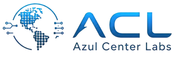

Incidencias con seguimiento lento
Automatización con RPA y scripting para gestión de incidencias en entorno corporativo, integrando criterios operativos y seguimiento.
-70% en tiemposIngeniero de Sistemas con más de 8 años liderando infraestructura híbrida, ciberseguridad, continuidad operativa y servicios TI. En paralelo desarrollo sistemas internos, automatizaciones y aplicaciones con backend, bases de datos e IA aplicada para reducir fricción operativa.
No soy un perfil netamente web. Mi base está en liderar tecnología para que el negocio opere sin fricción, y mi diferencial es poder bajar esa visión a soluciones concretas: automatizaciones, dashboards, integraciones y aplicaciones internas.
He liderado áreas de Tecnología de la Información en entornos corporativos, coordinando equipos, proveedores, licencias, presupuestos, continuidad operativa, Microsoft 365, servidores Windows/Linux, virtualización, redes, VPN, respaldos y seguridad. También desarrollo con Python, JavaScript, React, Node.js, Django, Flask y herramientas de IA cuando una solución propia aporta velocidad, control o visibilidad.
Windows Server / Linux / Active Directory / Microsoft 365 / Fortinet / Zero Trust / VMware / Hyper-V / Zabbix / GLPI / OCS Inventory / Python / JavaScript / React / Node.js / Django / Flask / Docker / Vercel / SQL Server / PostgreSQL / Power BI / Tableau
Mi aporte se mide en continuidad, tiempos de respuesta, trazabilidad, seguridad y capacidad de convertir problemas operativos en sistemas más simples de gestionar.
Automatización con RPA y scripting para gestión de incidencias en entorno corporativo, integrando criterios operativos y seguimiento.
-70% en tiemposGestión de mesa de ayuda, usuarios, inventario y activos con GLPI, OCS Inventory, documentación y escalamiento técnico.
200+ usuariosZabbix, respaldos DRP/BCP, hardening, Vaultwarden, políticas de acceso, MFA, VPN, Fortinet y Zero Trust.
DRP / BCPProcesos de atención, SLAs, escalamiento, documentación, KPIs, proveedores y mejora continua.
Servidores, redes, virtualización, respaldos, monitoreo, Microsoft 365 y operación híbrida.
MFA, control de identidades, Fortinet, VPN, hardening, Zero Trust y protección de accesos.
Python, JavaScript, React, Node.js, Django, Flask, Power Automate, PowerShell, BI e IA para herramientas internas útiles.
Experiencia gestionando servicios críticos, continuidad, presupuesto, licencias, proveedores, monitoreo, seguridad, automatización y proyectos de integración empresarial.
Lidero el área de Sistemas: equipo técnico, procesos de atención, infraestructura, proveedores, licencias, continuidad, seguridad, integración ERP/POS y documentación operativa.
Gestión de infraestructura TI, Microsoft 365, servidores Windows/Linux, VMware/Hyper-V, redes, VPN, seguridad, accesos, proveedores, KPIs, presupuesto y automatización con Power Automate.
Automatización de gestión de incidencias para BBVA, reduciendo tiempos en 70%, creación de dashboards de seguridad en Tableau y apoyo en políticas Zero Trust con Fortinet.
Administración de Windows Server, Active Directory, backups con Veeam/Acronis y soporte para más de 200 usuarios, mejorando estabilidad y tiempos de respuesta.
Gestión de redes corporativas, cableado estructurado, switches Cisco, VLAN, CCTV y mantenimiento preventivo con reducción de downtime.
Estos proyectos muestran mi lado desarrollador dentro de un perfil de gestión TI: software aplicado a soporte, control, monitoreo, automatización, analítica y operación.
Problema: consultas y tareas recurrentes de TI consumen tiempo cuando dependen siempre de atención manual.
Bot orientado a soporte y operación TI para centralizar respuestas, guiar solicitudes frecuentes y acercar automatización a procesos internos del área.
Ver en GitHubGestión de gimnasio con socios, asistencia por reconocimiento facial, pagos, membresías, dashboards, anuncios por voz y roles.
Operación / Python / FastAPI / IA / Dashboards
GitHubAnálisis de logs para detectar anomalías, picos de errores, patrones repetidos y códigos HTTP inusuales con resumen ejecutivo.
Monitoreo / Logs / Python / IA
ConsultarAnálisis local de CVs para ranking de candidatos, extracción de datos y preguntas de entrevista sin exponer información sensible.
Procesos internos / React / FastAPI / IA local
GitHubProyecto en Python que convierte investigación académica en una implementación clara, medible, trazable y documentable.
Investigación / Python / Prototipo técnico
GitHubFormación orientada a sistemas, gestión de servicios TI, seguridad, desarrollo de software, datos, automatización, IA y mejora de procesos tecnológicos.



Disponible para roles híbridos de liderazgo TI, infraestructura, continuidad operativa, seguridad, automatización, dashboards y desarrollo de sistemas internos.